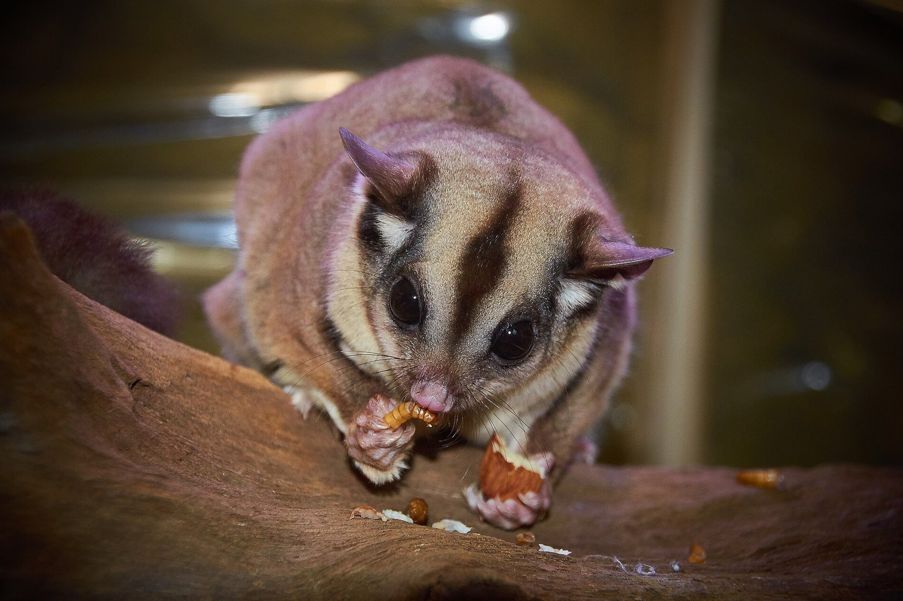

Sugar Glider Diet: The Calcium-to-Phosphorus Ratio Behind Hind-Limb Paralysis
Hind-limb paralysis in sugar gliders is usually nutritional, not neurological. The number that predicts it is a calcium-to-phosphorus ratio, and fruit does not supply it.

The number that matters in sugar glider nutrition is not calcium on its own — it is the ratio of calcium to phosphorus in the whole diet, and the figure to hold in your head is 2:1. A sugar glider (Petaurus breviceps) eating a diet at 1:1 or worse, day after day, is slowly drawing calcium out of bone to keep serum levels stable. That process is nutritional secondary hyperparathyroidism: low dietary calcium (or high phosphorus, which binds calcium in the gut before it is absorbed) triggers parathyroid hormone release, which pulls calcium from the skeleton, and in a small glider the first thing you notice is often not the bone — it is the hind legs, dragging at 26-30 °C when the animal should be bouncing off the mesh.
The night I got the ratio wrong
I remember the scale reading: 118 g at 9 p.m. on a Tuesday, and this was a young adult male who had been on my own mix for four months — fruit, a little yoghurt, mealworms by the handful because he loved them. He came off the branch and instead of gliding to my shoulder he half-landed and sat with his back legs splayed, one foot turned inward. I weighed him again the same night. 118 g. Not the weight that worried me. The way he sat.
What I had done was feed by what he would eat, and he would eat mealworms and apple until the bowl was empty. Mealworms sit around 1:13 calcium-to-phosphorus by most analyses I have seen quoted — the calcium is a rounding error next to the phosphorus. My mix had no reliable calcium source at all. The vet put him on a corrected diet and he recovered the use of his legs over about six weeks, but he never quite glided the same way again. I now weigh the insects and dust them, and I keep a running note of the ratio rather than trusting my eye.
What the animal actually needs, and why
Sugar gliders are small obligate exudivores — in the wild a large part of the diet is gum, sap and nectar, with insects and the occasional small vertebrate. Gum is low in phosphorus and supplies some calcium; insects are the phosphorus-heavy part. The captive diet goes wrong almost every time for the same two reasons: too much phosphorus-rich insect and fruit, and too little absorbable calcium. The body then does what every vertebrate does. Parathyroid hormone rises, bone is resorbed to keep blood calcium within the narrow band the nerves and muscles need, and the skeleton — which in a 100-120 g glider is thin to begin with — loses density. The hind limbs go first because they carry the load when the animal lands and climbs, and a glider with weak bone starts folding rather than springing.
Hind-limb paralysis (HLP) is the name keepers use for the end stage of that chain, though strictly the paralysis is a sign and the disease is the metabolic bone problem behind it. The same process can show as tremors, a stiff or uncoordinated gait, reluctance to climb, or a glider that suddenly cannot right itself. If you see any of that, it is a vet visit, not a supplement tweak — by the time the legs drag, the bone loss is significant.
The practical target most experienced keepers and the exotic-vet consensus work to is a whole-diet calcium-to-phosphorus ratio of about 2:1, with vitamin D3 available so the calcium can actually be absorbed and used. That vitamin D3 figure matters: calcium without D3 is a bag of powder. The sun provides it in the wild; indoors, it comes from a supplemented diet or a dusted insect.
Building a diet you can measure
The way I build a week now is to treat the staple as the fixed part and the treats as the variable. A common structure: a balanced commercial glider staple as the base, a nightly offering of fresh fruit and vegetable, and insects a few times a week — dusted, weighed, counted.
- Fix the staple. Weigh the dry staple on a 0.1 g scale so a portion is repeatable. The scale is the whole game; eyeballing portions is how ratios drift.
- Dust every insect. Use a calcium-with-D3 powder and shake the insect in a bag until it is visibly coated, then tap off the excess. Re-dust at every feeding, not once a week.
- Count the insects. A handful is not a portion. I feed four to six small insects per adult glider per feeding, not a bowlful.
- Log what went in. A two-line note per night — staple weight, insect count, fruit offered, whether it was eaten — tells you in a month whether the ratio is holding far better than memory does.
The cheapest fix here is a 0.1 g digital kitchen scale and a proper calcium-with-D3 dust: .
What that changes, in measurable terms: insects that were once a phosphorus load become a calcium carrier; the ratio trends up toward 2:1 rather than down toward 1:1; and because the D3 is present, the calcium is absorbed rather than passed through. It is not glamorous, and the glider will not thank you, but it is the difference between a diet that builds bone and one that quietly strips it.
| Life stage | Approximate weight | Target Ca:P (whole diet) | Insect frequency | Check |
|---|---|---|---|---|
| Joey (hand-reared / weaned) | 15-40 g | About 2:1, dusted | Daily, dusted, small | Weight daily on 0.1 g scale |
| Juvenile | 60-90 g | 2:1 | Most days, dusted | Weight weekly; watch gait |
| Adult | 100-160 g | 2:1 | 3-4 times per week, dusted | Weight fortnightly; gait check |
| Breeding female | 110-170 g | 2:1 or slightly above | 3-4 times per week, dusted | Weight weekly; extra calcium load is real |
| Recovering from HLP | Varies | Vet-directed | Vet-directed, dusted | Vet follow-up; gait and weight |
The breeding row is the one people forget. A female carrying and rearing joeys is depositing calcium into young, and a diet that was borderline for a lone adult becomes a deficit fast. I feed the same ratio but slightly more, and I weigh her weekly while she has joeys at foot.
The enclosure side of the same problem
Nutrition does most of the work, but the body has to be warm enough to use it. A sugar glider's enclosure wants a warm zone around 26-30 °C and plenty of vertical space — a minimum footprint of 60 × 60 × 90 cm for a pair, taller if you can. Below about 22 °C at night the animal slows and eats less, and a glider that is not eating is not getting its calcium.
UVB is the thin-evidence part. Some keepers run a low-output UVB tube, and there is a reasonable argument for it — the animal is nocturnal but still a mammal with skin — but I cannot point to a controlled study showing it replaces dietary D3 in this species. My own practice: a low-level UVB tube on a 12-hour photoperiod, plus D3 in the diet, because I would rather have both than rely on one I cannot measure. If you run UVB, fit a tube rated for the species at the distance the manufacturer specifies, and replace it on schedule — tubes fade before they look dead. Any enclosure change means new heating and lighting: .
The bioactive side is worth a mention because it keeps the enclosure dry and clean, which reduces the mould and ammonia problems that stress a glider and put it off food. A deep substrate with a clean-up crew, plenty of climbing, and a nest box at the warm end is the system, not just the box. Handle juveniles less than adults — a stressed young glider drops weight and the ratio problem compounds — and remember that a glider which suddenly stops eating, or starts walking oddly, is a health question rather than a diet tweak: .
Reading the early warnings
The signs to watch for, in the order I have seen them, are: a reluctance to jump, a splayed or stiff back leg on landing, tremors when the animal is held, then actual dragging. Weight is a poor early warning — a glider with weak bone can hold weight for weeks — so the gait and the landing are what I check now, not the scale alone. I handle each glider for a minute, let it climb my arm, and watch it land. That is the test I trust.
If you suspect HLP, do not add a calcium supplement and hope. Get a vet who sees exotics, let them assess, and follow the treatment plan. The diet correction afterward is the part you own; the acute phase is not a home job.
Frequently asked questions
What calcium-to-phosphorus ratio should a sugar glider diet hit?
About 2:1 across the whole diet, not just the supplement. That means the calcium in the staple, the dust on the insects and the fruit all count. Phosphate-heavy insects pull the ratio down fast, which is why dusting and portion control matter more than the brand of powder.
Can I fix hind-limb paralysis by changing the diet at home?
No. Once a glider is dragging its legs, the bone loss is significant and it needs a vet to assess and treat. Diet correction is part of recovery, but it is the follow-up, not the fix. Call the vet the same day you see the sign.
Do I need UVB for a sugar glider if the diet has D3?
Honestly, the evidence is thin. There is no controlled study I can point to showing UVB replaces dietary D3 in this species. Many keepers run a low-output tube on a 12-hour cycle and keep D3 in the diet. That is what I do, and it is a belt-and-braces choice, not a proven requirement.
What we actually use
Two pieces of equipment that do most of the work in a Sugar Glider setup. Nothing here is here because a brand asked.
-
Check price on AmazonFeeding
Digital Kitchen Scale, 0.1 g
A 90 g animal needs a scale that reads to 1 g to track a diet change.
Typical price $18–30 -
Check price on AmazonFeeding
Rep-Cal Calcium with D3
The supplement that corrects a fruit-heavy diet — dusted by weight, never by eye.
Typical price $11–17
Links open Amazon in a new tab. We do not set or track prices.
Affiliate disclosure. As an Amazon Associate, we earn from qualifying purchases. Every card in this guide is an affiliate link — it costs you nothing, and we only list gear we have run in our own enclosures.